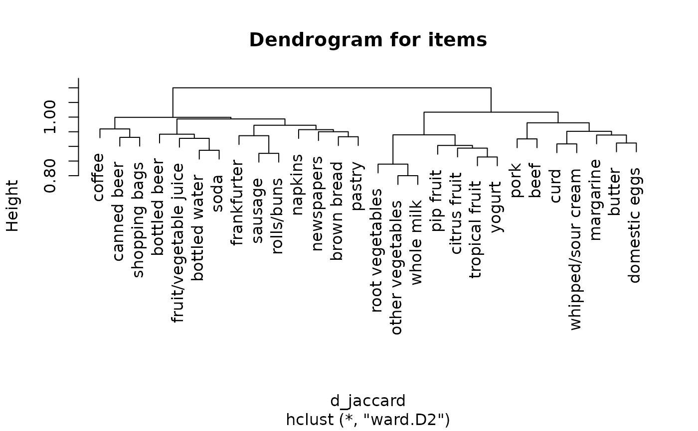
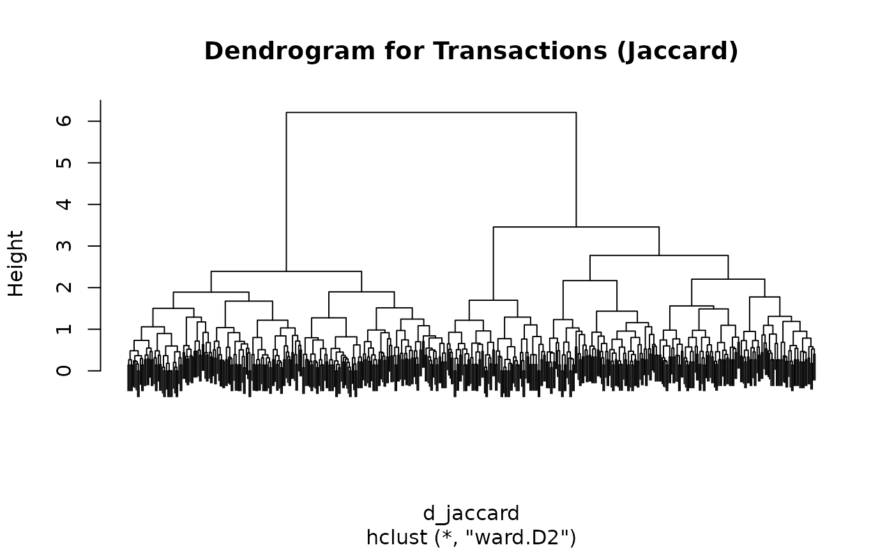
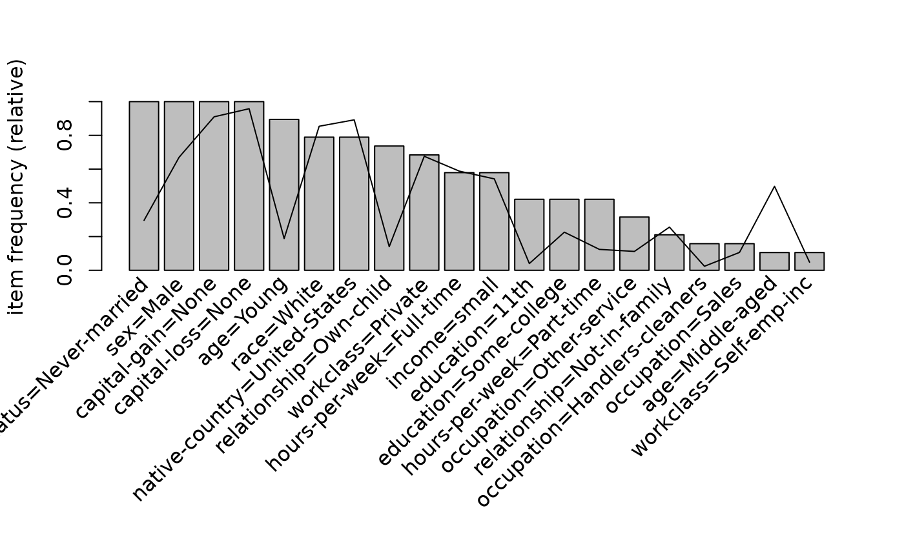
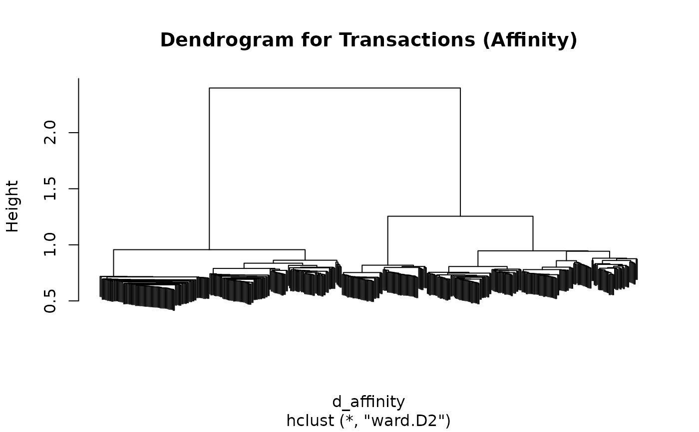
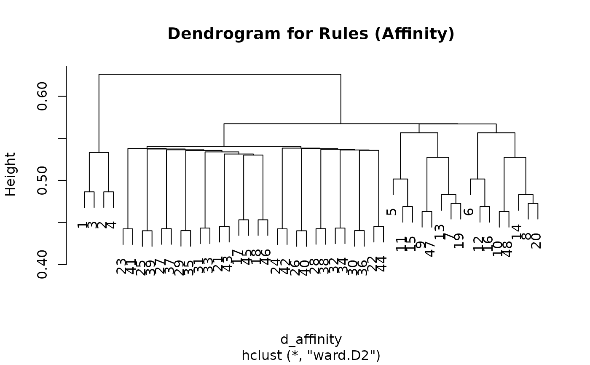

Dissimilarity Matrix Computation for Associations and Transactions
Source:R/dissimilarity.R
dissimilarity.RdComputes distances for binary data in a matrix, transactions, or
associations. The result can be used for grouping and clustering. See
Hahsler (2016) for an
introduction to distance-based clustering of association rules.
Usage
dissimilarity(x, y = NULL, method = NULL, args = NULL, items = FALSE, ...)
# S4 method for class 'matrix'
dissimilarity(x, y = NULL, method = NULL, args = NULL, items = FALSE, ...)
# S4 method for class 'itemMatrix'
dissimilarity(x, y = NULL, method = NULL, args = NULL, items = FALSE, ...)
# S4 method for class 'associations'
dissimilarity(x, y = NULL, method = NULL, args = NULL, items = FALSE, ...)Arguments
- x
the set of elements (e.g.,
matrix, itemMatrix, transactions, itemsets, rules).- y
NULLor a second compatible set for calculating cross dissimilarities.- method
the distance measure to be used. Implemented measures are (defaults to
"jaccard"):"affinity": measure based on theaffinity(), a similarity measure between items. It is defined as the average affinity between the items in two transactions (see Aggarwal et al. (2002)). Ifxis not the full transaction setargsneeds to contain either precalculated affinities as element"affinities"or the transaction set as element"transactions"."cosine": one minus cosine similarity."dice": one minus Dice's coefficient defined by Dice (1945). Dice's coefficient is similar to Jaccard similarity but gives double weight to shared items."euclidean": the Euclidean distance."jaccard": one minus the number of shared items divided by the number of items present in either element (Sneath, 1957)."matching": one minus the matching coefficient defined by Sokal and Michener (1958). This coefficient gives equal weight to the presence and absence of items."pearson": a distance derived from Pearson correlation for binary incidence vectors."phi": same as"pearson". Pearson's correlation coefficient reduces to the phi coefficient for the 2x2 contingency tables used here."toivonen": Method described in Toivonen et al. (1995). For rules this measure is only defined between rules with the same consequent. The distance between two rules is defined as the number of transactions which is covered by only one of the two rules. The transactions used to mine the associations has to be passed on viaargsas element"transactions"."gupta": Method described in Gupta et al. (1999). The distance between two rules is defined as 1 minus the proportion of transactions which are covered by both rules in the transactions covered by each rule individually. The transactions used to mine the associations has to be passed on viaargsas element"transactions".
- args
a list of method-specific arguments. The
"affinity","toivonen", and"gupta"methods can requiretransactionsor a precomputedaffinitiesmatrix in this list.- items
logical; calculate dissimilarities between rows (transactions/associations) or between columns (items)?
- ...
unused; unknown arguments produce a warning.
Value
If y = NULL, a symmetric stats::dist object. If y is supplied,
an ar_cross_dissimilarity matrix with nrow(x) rows and nrow(y) columns
(or the corresponding numbers of items when items = TRUE).
Details
Matrix input must contain only zeroes and ones (or logical values). When y
is supplied, it must use the same columns as x. Likewise, arules objects
must have compatible item coding. Setting items = TRUE computes distances
between columns (items) instead of rows.
References
Aggarwal, C.C., Cecilia Procopiuc, and Philip S. Yu. (2002) Finding localized associations in market basket data. IEEE Trans. on Knowledge and Data Engineering 14(1):51–62.
Dice, L. R. (1945) Measures of the amount of ecologic association between species. Ecology 26, pages 297–302.
Gupta, G., Strehl, A., and Ghosh, J. (1999) Distance based clustering of association rules. In Intelligent Engineering Systems Through Artificial Neural Networks (Proceedings of ANNIE 1999), pages 759-764. ASME Press.
Hahsler, M. (2016) Grouping association rules using lift. In C. Iyigun, R. Moghaddess, and A. Oztekin, editors, 11th INFORMS Workshop on Data Mining and Decision Analytics (DM-DA 2016).
Sneath, P. H. A. (1957) Some thoughts on bacterial classification. Journal of General Microbiology 17, pages 184–200.
Sokal, R. R. and Michener, C. D. (1958) A statistical method for evaluating systematic relationships. University of Kansas Science Bulletin 38, pages 1409–1438.
Toivonen, H., Klemettinen, M., Ronkainen, P., Hatonen, K. and Mannila H. (1995) Pruning and grouping discovered association rules. In Proceedings of KDD'95.
See also
Other proximity classes and functions:
affinity(),
predict(),
proximity-classes
Examples
## cluster items in Groceries with support > 5%
data("Groceries")
s <- Groceries[, itemFrequency(Groceries) > 0.05]
d_jaccard <- dissimilarity(s, items = TRUE)
plot(hclust(d_jaccard, method = "ward.D2"), main = "Dendrogram for items")

## cluster transactions for a sample of Adult
data("Adult")
s <- sample(Adult, 500)
## calculate Jaccard distances between sample transactions and do hclust
d_jaccard <- dissimilarity(s)
hc <- hclust(d_jaccard, method = "ward.D2")
plot(hc, labels = FALSE, main = "Dendrogram for Transactions (Jaccard)")

## get 20 clusters and look at the difference of the item frequencies (bars)
## for the top 20 items) in cluster 1 compared to the data (line)
assign <- cutree(hc, 20)
itemFrequencyPlot(s[assign == 1], population = s, topN = 20)

## calculate affinity-based distances between transactions and do hclust
d_affinity <- dissimilarity(s, method = "affinity")
hc <- hclust(d_affinity, method = "ward.D2")
plot(hc, labels = FALSE, main = "Dendrogram for Transactions (Affinity)")

## cluster association rules
rules <- apriori(Adult, parameter = list(support = 0.3))
#> Apriori
#>
#> Parameter specification:
#> confidence minval smax arem aval originalSupport maxtime support minlen
#> 0.8 0.1 1 none FALSE TRUE 5 0.3 1
#> maxlen target ext
#> 10 rules TRUE
#>
#> Algorithmic control:
#> filter tree heap memopt load sort verbose
#> 0.1 TRUE TRUE FALSE TRUE 2 TRUE
#>
#> Absolute minimum support count: 14652
#>
#> set item appearances ...[0 item(s)] done [0.00s].
#> set transactions ...[115 item(s), 48842 transaction(s)] done [0.15s].
#> sorting and recoding items ... [14 item(s)] done [0.02s].
#> creating transaction tree ... done [0.07s].
#> checking subsets of size 1 2 3 4 5 6 done [0.00s].
#> writing ... [508 rule(s)] done [0.00s].
#> creating S4 object ... done [0.01s].
rules <- subset(rules, subset = lift > 2)
## use affinity to cluster rules
## Note: we need to supply the transactions (or affinities) from the
## dataset (sample).
d_affinity <- dissimilarity(rules,
method = "affinity",
args = list(transactions = s)
)
hc <- hclust(d_affinity, method = "ward.D2")
plot(hc, main = "Dendrogram for Rules (Affinity)")

## create 4 groups and inspect the rules in the first group.
assign <- cutree(hc, k = 3)
inspect(rules[assign == 1])
#> lhs rhs support confidence coverage lift count
#> [1] {relationship=Husband} => {marital-status=Married-civ-spouse} 0.4034233 0.9993914 0.4036690 2.181164 19704
#> [2] {marital-status=Married-civ-spouse} => {relationship=Husband} 0.4034233 0.8804683 0.4581917 2.181164 19704
#> [3] {relationship=Husband,
#> sex=Male} => {marital-status=Married-civ-spouse} 0.4034028 0.9993913 0.4036485 2.181164 19703
#> [4] {marital-status=Married-civ-spouse,
#> sex=Male} => {relationship=Husband} 0.4034028 0.9901503 0.4074157 2.452877 19703